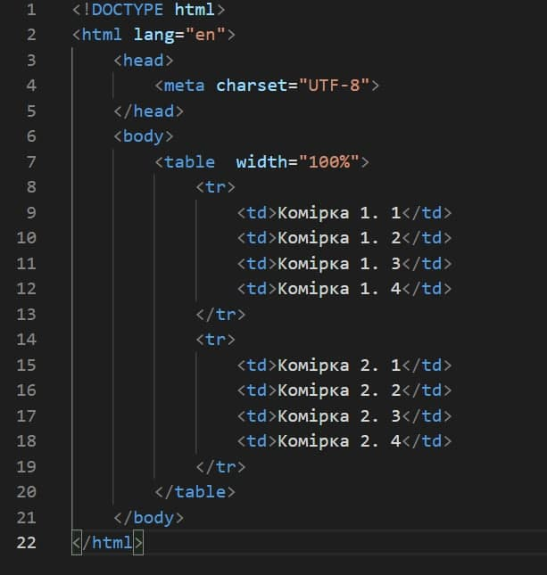
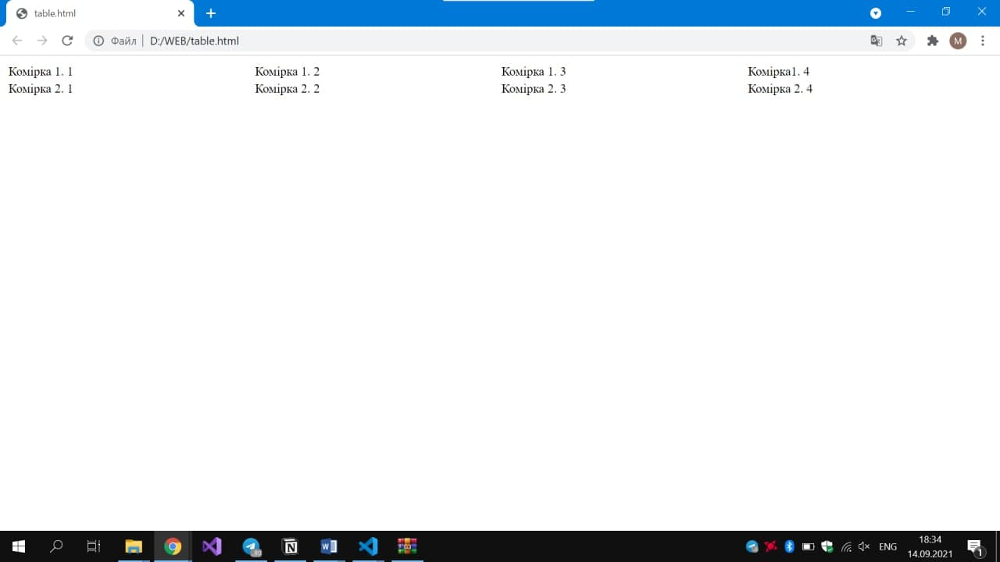

- Опис предметного середовища
- Тема, мета і
місце розташування Лабораторної роботи №1
- ВИСНОВКИ
|
Код таблиці та результат


Теорія
У HTML для створення таблиць використовуються теги групи table. До них відносяться:
1. table - тег обгортка таблиці, є кореневим контейнером таблиці. Весь вміст таблиці повинно знаходитися всередині нього;
2. tr - тег рядка (ряду) таблиці;
3. td - тег звичайної комірки таблиці;
4. th - тег комірки-заголовка таблиці;
5. col - тег колонки таблиці;
6. colgroup - тег групи колонок таблиці;
7. thead - тег заголовка таблиці;
8. tbody - тег основної частини таблиці
9. tfoot - тег нижнього колонтитула таблиці;
10. caption - тег підпису таблиці.
Атрибути тега table:
- align - задає правило вирівнювання вмісту таблиці по горизонталі.
- bgcolor - фоновий колір.
- border - ширина таблиці в пікселях.
- cellpadding - відступ від кордонів осередків до їх вмісту. Значення вказує кількість пікселів.
- cellspacing - відступ між кордонами осередків. Значення вказує кількість пікселів.
- frame - Визначає які зовнішні кордони будуть відображені:
void - всі межі приховані;
above - тільки верхня межа;
below - тільки нижня межа;
lhs - тільки ліва межа;
rhs - тільки права межа;
vsides - вертикальні кордону;
hsides - горизонтальні кордону;
box або border - всі межі.
- rules - Визначає які внутрішні кордони будуть відображені:
none - все приховані;
groups - межі груп;
rows - кордони рядків;
cols - межі
Атрибути тега tr:
- align - задає правило вирівнювання вмісту таблиці по горизонталі.
- bgcolor - фоновий колір.
- bordercolor - колір рамки.
- char - вирівнювання вмісту комірок відносно заданого символу.
- charoff - зсув вмісту осередків щодо зазначеного символу.
- valign - вирівнювання вмісту комірок по вертикалі.
Атрибути тега td:
- align - встановлює число осередків, які повинні бути об'єднані по горизонталі.
- bgcolor - фоновий колір.
- colspan - колір рамки.
- height - браузер сам встановлює висоту таблиці і її осередків виходячи з їх вмісту. Однак при використанні атрибута height висота осередків буде змінена. Тут можливі два варіанти. Якщо значення height менше, ніж вміст комірки, то цей атрибут буде проігнорований. У разі, коли встановлена висота осередку, що перевищує її вміст, додається порожній простір по вертикалі.
- rowspan - встановлює число осередків, які повинні бути об'єднані по вертикалі.
- valign - вирівнювання вмісту комірок по вертикалі.
- width - задає ширину комірки.
Атрибути тега th:
- abbr - короткий опис вмісту комірки.
- align - визначає вирівнювання вмісту комірки по горизонталі.
- axis - групує осередки пов'язані між собою схожою інформацією.
- bgcolor - фоновий колір.
- bordercolor - колір рамки.
- char - вирівнювання вмісту комірок відносно заданого символу.
- charoff - зсув вмісту осередків щодо зазначеного символу.
- valign - вирівнювання вмісту комірок по вертикалі.
- colspan - об'єднує горизонтальні осередки.
- headers - дозволяє зв'язати елементи таблиці з заголовками в мовних браузерах.
- height - висота комірки.
- nowrap - забороняє перенесення рядків.
- scope - дозволяє зв'язати осередку простий таблиці з заголовками в мовних браузерах.
- valign - вирівнювання вмісту комірок по вертикалі.
- width - задає ширину комірки.
Атрибути тега col:
- align - визначає вирівнювання вмісту комірки по горизонталі.
- char - вирівнювання вмісту комірок відносно заданого символу.
- charoff - зсув вмісту осередків щодо зазначеного символу.
- valign - вирівнювання вмісту комірок по вертикалі.
- span - кількість колонок, до яких слід застосовувати параметри.
- valign - вирівнювання вмісту комірок по вертикалі.
- width - задає ширину комірки.
Атрибути тега colgroup:
- align - визначає вирівнювання вмісту комірки по горизонталі.
- char - вирівнювання вмісту комірок відносно заданого символу.
- charoff - зсув вмісту осередків щодо зазначеного символу.
- valign - вирівнювання вмісту комірок по вертикалі.
- span - кількість колонок, до яких слід застосовувати параметри.
- valign - вирівнювання вмісту комірок по вертикалі.
- width - задає ширину комірки.
Атрибути тега thead:
- align - визначає вирівнювання вмісту комірки по горизонталі.
- bgcolor - фоновий колір.
- char - вирівнювання вмісту комірок відносно заданого символу.
- charoff - зсув вмісту осередків щодо зазначеного символу.
- valign - вирівнювання вмісту комірок по вертикалі.
Атрибути тега tbody:
- align - визначає вирівнювання вмісту комірки по горизонталі.
- bgcolor - фоновий колір.
- char - вирівнювання вмісту комірок відносно заданого символу.
- charoff - зсув вмісту осередків щодо зазначеного символу.
- valign - вирівнювання вмісту комірок по вертикалі.
Атрибути тега tfoot:
- align - визначає вирівнювання вмісту комірки по горизонталі.
- bgcolor - фоновий колір.
- char - вирівнювання вмісту комірок відносно заданого символу.
- charoff - зсув вмісту осередків щодо зазначеного символу.
- valign - вирівнювання вмісту комірок по вертикалі.
Атрибути тега caption:
- align - визначає вирівнювання вмісту комірки по горизонталі.
- valign - вирівнювання вмісту комірок по вертикалі.
|